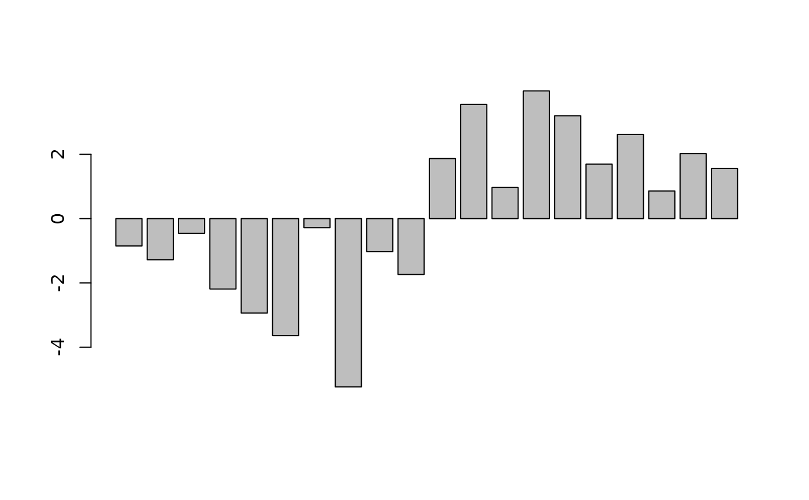

Calculate percent noise
Examples
withr::local_seed(123)
x <- -10:10
noisy <- jitter(x)
out <- percent_noise(x, noisy)
out
#> [1] -0.8496899 -1.2813562 -0.4551154 -2.1886709 -2.9364486 -3.6355480
#> [7] -0.2810549 -5.2322539 -1.0287003 -1.7354106 Inf 1.8666338
#> [13] 3.5514127 0.9684454 3.9707532 3.1985998 1.6927484 2.6168027
#> [19] 0.8603964 2.0200162 1.5581573
finite <- out[is.finite(out)]
barplot(finite)

mean(finite)
#> [1] 0.1339859